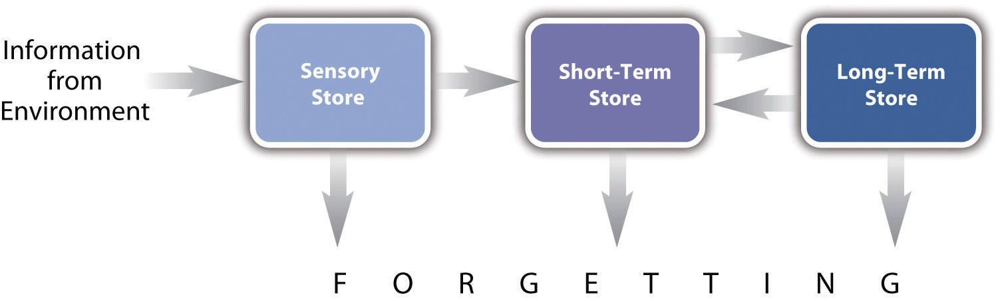
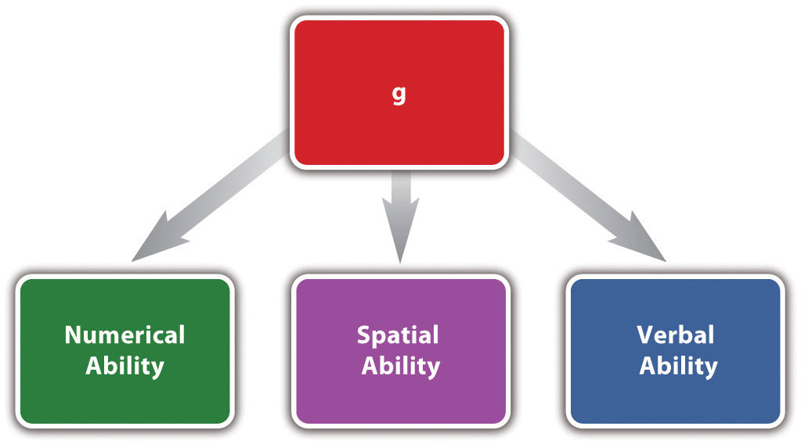

A phenomenonA general result that has been observed reliably in empirical research. An established answer to a research question. (plural, phenomena) is a general result that has been observed reliably in systematic empirical research. In essence, it is an established answer to a research question. Some phenomena we have encountered in this book are that expressive writing improves health, women do not talk more than men, and cell phone usage impairs driving ability. Some others are that dissociative identity disorder (formerly called multiple personality disorder) increased greatly in prevalence during the late 20th century, people perform better on easy tasks when they are being watched by others (and worse on difficult tasks), and people recall items presented at the beginning and end of a list better than items presented in the middle.
Phenomena are often given names by their discoverers or other researchers, and these names can catch on and become widely known. The following list is a small sample of famous phenomena in psychology.
Although an empirical result might be referred to as a phenomenon after being observed only once, this term is more likely to be used for results that have been replicated. ReplicationThe process of conducting an empirical study again—either exactly as it was originally conducted or with modifications—to see if the same results are observed. means conducting a study again—either exactly as it was originally conducted or with modifications—to be sure that it produces the same results. Individual researchers usually replicate their own studies before publishing them. Many empirical research reports include an initial study and then one or more follow-up studies that replicate the initial study with minor modifications. Particularly interesting results come to the attention of other researchers who conduct their own replications. The positive effect of expressive writing on health and the negative effect of cell phone usage on driving ability are examples of phenomena that have been replicated many times by many different researchers.
Sometimes a replication of a study produces results that differ from the results of the initial study. This could mean that the results of the initial study or the results of the replication were a fluke—they occurred by chance and do not reflect something that is generally true. In either case, additional replications would be likely to resolve this. A failure to produce the same results could also mean that the replication differed in some important way from the initial study. For example, early studies showed that people performed a variety of tasks better and faster when they were watched by others than when they were alone. Some later replications, however, showed that people performed worse when they were watched by others. Eventually researcher Robert Zajonc identified a key difference between the two types of studies. People seemed to perform better when being watched on highly practiced tasks but worse when being watched on relatively unpracticed tasks (Zajonc, 1965).Zajonc, R. B. (1965). Social facilitation. Science, 149, 269–274. These two phenomena have now come to be called social facilitation and social inhibition.
A theoryA coherent explanation or interpretation of one or more phenomena. is a coherent explanation or interpretation of one or more phenomena. Although theories can take a variety of forms, one thing they have in common is that they go beyond the phenomena they explain by including variables, structures, processes, functions, or organizing principles that have not been observed directly. Consider, for example, Zajonc’s theory of social facilitation and social inhibition. He proposed that being watched by others while performing a task creates a general state of physiological arousal, which increases the likelihood of the dominant (most likely) response. So for highly practiced tasks, being watched increases the tendency to make correct responses, but for relatively unpracticed tasks, being watched increases the tendency to make incorrect responses. Notice that this theory—which has come to be called drive theory—provides an explanation of both social facilitation and social inhibition that goes beyond the phenomena themselves by including concepts such as “arousal” and “dominant response,” along with processes such as the effect of arousal on the dominant response.
Outside of science, referring to an idea as a theory often implies that it is untested—perhaps no more than a wild guess. In science, however, the term theory has no such implication. A theory is simply an explanation or interpretation of a set of phenomena. It can be untested, but it can also be extensively tested, well supported, and accepted as an accurate description of the world by the scientific community. The theory of evolution by natural selection, for example, is a theory because it is an explanation of the diversity of life on earth—not because it is untested or unsupported by scientific research. On the contrary, the evidence for this theory is overwhelmingly positive and nearly all scientists accept its basic assumptions as accurate. Similarly, the “germ theory” of disease is a theory because it is an explanation of the origin of various diseases, not because there is any doubt that many diseases are caused by microorganisms that infect the body.
In addition to theory, researchers in psychology use several related terms to refer to their explanations and interpretations of phenomena. A perspectiveA general approach to explaining or interpreting phenomena. Among the broadest perspectives in psychology are the biological, evolutionary, behavioral, cognitive, and sociocultural perspectives. is a broad approach—more general than a theory—to explaining and interpreting phenomena. For example, researchers who take a biological perspective tend to explain phenomena in terms of genetics or nervous and endocrine system structures and processes, while researchers who take a behavioral perspective tend to explain phenomena in terms of reinforcement, punishment, and other external events. A modelAn explanation of a specific phenomenon, often expressed in the form of mathematical equations, computer programs, or biological structures and processes. is a precise explanation or interpretation of a specific phenomenon—often expressed in terms of equations, computer programs, or biological structures and processes. A hypothesisA prediction about a new phenomenon that would be observed if a particular theory were true. Also used to refer to a relatively simple theory that includes only a few key components. can be an explanation that relies on just a few key concepts—although this term more commonly refers to a prediction about a new phenomenon based on a theory (see Section 4.3 "Using Theories in Psychological Research"). Adding to the confusion is the fact that researchers often use these terms interchangeably. It would not be considered wrong to refer to the drive theory as the drive model or even the drive hypothesis. And the biopsychosocial model of health psychology—the general idea that health is determined by an interaction of biological, psychological, and social factors—is really more like a perspective as defined here. Keep in mind, however, that the most important distinction remains that between observations and interpretations.
Of course, scientific theories are meant to provide accurate explanations or interpretations of phenomena. But there must be more to it than this. Consider that a theory can be accurate without being very useful. To say that expressive writing helps people “deal with their emotions” might be accurate as far as it goes, but it seems too vague to be of much use. Consider also that a theory can be useful without being entirely accurate. Figure 4.2 "Representation of the Multistore Model of Human Memory" is a representation of the classic multistore model of human memory, which is still cited by researchers and discussed in textbooks despite the fact that it is now known to be inaccurate in a number of ways (Izawa, 1999).Izawa, C. (Ed.) (1999). On human memory: Evolution, progress, and reflections on the 30th anniversary of the Atkinson-Shiffrin model. Mahwah, NJ: Erlbaum. These two examples suggest that theories have purposes other than simply providing accurate explanations or interpretations. Here we look at three additional purposes of theories: the organization of known phenomena, the prediction of outcomes in new situations, and the generation of new research.
Figure 4.2 Representation of the Multistore Model of Human Memory
In the multistore model of human memory, information from the environment passes through a sensory store on its way to a short-term store, where it can be rehearsed, and then to a long-term store, where it can be stored and retrieved much later. This theory has been extremely successful at organizing old phenomena and predicting new ones.
One important purpose of scientific theories is to organize phenomena in ways that help people think about them clearly and efficiently. The drive theory of social facilitation and social inhibition, for example, helps to organize and make sense of a large number of seemingly contradictory results. The multistore model of human memory efficiently summarizes many important phenomena: the limited capacity and short retention time of information that is attended to but not rehearsed, the importance of rehearsing information for long-term retention, the serial-position effect, and so on. Or consider a classic theory of intelligence represented by Figure 4.3 "Representation of One Theory of Intelligence". According to this theory, intelligence consists of a general mental ability, g, plus a small number of more specific abilities that are influenced by g (Neisset et al., 1996).Neisser, U., Boodoo, G., Bouchard, T. J., Boykin, A. W., Brody, N., Ceci,…Urbina, S. (1996). Intelligence: Knowns and unknowns. American Psychologist, 51, 77–101. Although there are other theories of intelligence, this one does a good job of summarizing a large number of statistical relationships between tests of various mental abilities. This includes the fact that tests of all basic mental abilities tend to be somewhat positively correlated and the fact that certain subsets of mental abilities (e.g., reading comprehension and analogy completion) are more positively correlated than others (e.g., reading comprehension and arithmetic).
Figure 4.3 Representation of One Theory of Intelligence
In this theory of intelligence, a general mental ability (g) influences each of three more specific mental abilities. Theories of this type help to organize a large number of statistical relationships among tests of various mental abilities.
Thus theories are good or useful to the extent that they organize more phenomena with greater clarity and efficiency. Scientists generally follow the principle of parsimonyThe extent to which a theory explains or interprets phenomena in as simple a way as possible. A theory that does so is said to be parsimonious., which holds that a theory should include only as many concepts as are necessary to explain or interpret the phenomena of interest. Simpler, more parsimonious theories organize phenomena more efficiently than more complex, less parsimonious theories.
A second purpose of theories is to allow researchers and others to make predictions about what will happen in new situations. For example, a gymnastics coach might wonder whether a student’s performance is likely to be better or worse during a competition than when practicing alone. Even if this particular question has never been studied empirically, Zajonc’s drive theory suggests an answer. If the student generally performs with no mistakes, she is likely to perform better during competition. If she generally performs with many mistakes, she is likely to perform worse.
In clinical psychology, treatment decisions are often guided by theories. Consider, for example, dissociative identity disorder (formerly called multiple personality disorder). The prevailing scientific theory of dissociative identity disorder is that people develop multiple personalities (also called alters) because they are familiar with this idea from popular portrayals (e.g., the movie Sybil) and because they are unintentionally encouraged to do so by their clinicians (e.g., by asking to “meet” an alter). This theory implies that rather than encouraging patients to act out multiple personalities, treatment should involve discouraging them from doing this (Lilienfeld & Lynn, 2003).Lilienfeld, S. O., & Lynn, S. J. (2003). Dissociative identity disorder: Multiplepersonalities, multiple controversies. In S. O. Lilienfeld, S. J. Lynn, & J. M. Lohr (Eds.), Science and pseudoscience in clinical psychology (pp. 109–142). New York, NY: Guilford Press.
A third purpose of theories is to generate new research by raising new questions. Consider, for example, the theory that people engage in self-injurious behavior such as cutting because it reduces negative emotions such as sadness, anxiety, and anger. This theory immediately suggests several new and interesting questions. Is there, in fact, a statistical relationship between cutting and the amount of negative emotions experienced? Is it causal? If so, what is it about cutting that has this effect? Is it the pain, the sight of the injury, or something else? Does cutting affect all negative emotions equally?
Notice that a theory does not have to be accurate to serve this purpose. Even an inaccurate theory can generate new and interesting research questions. Of course, if the theory is inaccurate, the answers to the new questions will tend to be inconsistent with the theory. This will lead researchers to reevaluate the theory and either revise it or abandon it for a new one. And this is how scientific theories become more detailed and accurate over time.
At any point in time, researchers are usually considering multiple theories for any set of phenomena. One reason is that because human behavior is extremely complex, it is always possible to look at it from different perspectives. For example, a biological theory of sexual orientation might focus on the role of sex hormones during critical periods of brain development, while a sociocultural theory might focus on cultural factors that influence how underlying biological tendencies are expressed. A second reason is that—even from the same perspective—there are usually different ways to “go beyond” the phenomena of interest. For example, in addition to the drive theory of social facilitation and social inhibition, there is another theory that explains them in terms of a construct called “evaluation apprehension”—anxiety about being evaluated by the audience. Both theories go beyond the phenomena to be interpreted, but they do so by proposing somewhat different underlying processes.
Different theories of the same set of phenomena can be complementary—with each one supplying one piece of a larger puzzle. A biological theory of sexual orientation and a sociocultural theory of sexual orientation might accurately describe different aspects of the same complex phenomenon. Similarly, social facilitation could be the result of both general physiological arousal and evaluation apprehension. But different theories of the same phenomena can also be competing in the sense that if one is accurate, the other is probably not. For example, an alternative theory of dissociative identity disorder—the posttraumatic theory—holds that alters are created unconsciously by the patient as a means of coping with sexual abuse or some other traumatic experience. Because the sociocognitive theory and the posttraumatic theories attribute dissociative identity disorder to fundamentally different processes, it seems unlikely that both can be accurate. See Note 4.10 "Where Do Multiple Personalities Come From?" for more on these competing theories.
The fact that there are multiple theories for any set of phenomena does not mean that any theory is as good as any other or that it is impossible to know whether a theory provides an accurate explanation or interpretation. On the contrary, scientists are continually comparing theories in terms of their ability to organize phenomena, predict outcomes in new situations, and generate research. Those that fare poorly are assumed to be less accurate and are abandoned, while those that fare well are assumed to be more accurate and are retained and compared with newer—and hopefully better—theories. Although scientists generally do not believe that their theories ever provide perfectly accurate descriptions of the world, they do assume that this process produces theories that come closer and closer to that ideal.
The literature on dissociative identity disorder (DID) features two competing theories. The sociocognitive theory is that DID comes about because patients are aware of the disorder, know its characteristic features, and are encouraged to take on multiple personalities by their therapists. The posttraumatic theory is that multiple personalities develop as a way of coping with sexual abuse or some other trauma. There are now several lines of evidence that support the sociocognitive model over the posttraumatic model (Lilienfeld & Lynn, 2003).Lilienfeld, S. O., & Lynn, S. J. (2003). Dissociative identity disorder: Multiple personalities, multiple controversies. In S. O. Lilienfeld, S. J. Lynn, & J. M. Lohr (Eds.), Science and pseudoscience in clinical psychology (pp. 109–142). New York, NY: Guilford Press.
Practice: Find a recent article in a professional journal and do two things: